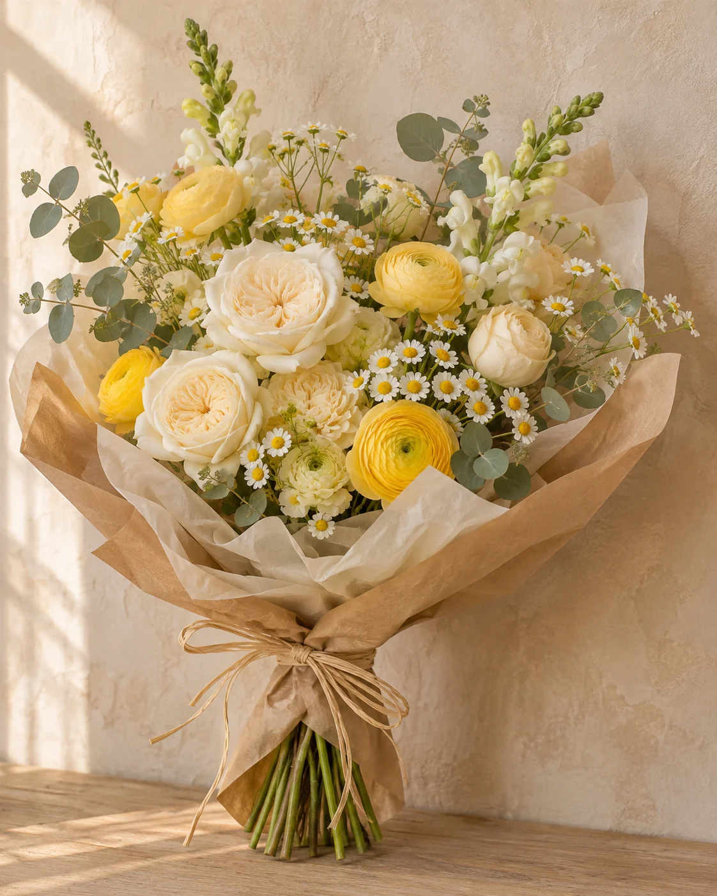

FLOWERS, WITH FEELING
Flowers for the
things words
can’t quite say.
Seasonal bouquets, thoughtfully arranged for everyday gestures and life’s big moments.
A little wild. Always thoughtful.

Given with love.
FRESH FROM THE FLOWER TABLE
The season’s lovely things.
A GESTURE GOES A LONG WAY
What would you
like to say?
We’ll let the flowers do the talking.
 A few stems. A lot of heart.
A few stems. A lot of heart.HELLO FROM OUR LITTLE STUDIO
Made by hand.
Given from the heart.
There’s something about a room full of flowers. The quiet bustle. The stray petals. The beautiful possibilities of a handful of stems.
That’s the spirit of Petal & Stem. Thoughtful arrangements with a little movement, a little unexpected color, and plenty of personality. Because the most meaningful gifts feel like the person giving them.
A little more about usWith love, Petal & Stem
About this concept studio
Petal & Stem is a fictional independent florist, brought to life as a working shop prototype. Our bouquets, studio story, prices, hours, and Portland delivery area are illustrative. The floral photographs were created for this concept.

A littlemore often.
SOMETHING LOVELY TO LOOK FORWARD TO
Make flowers
a regular thing.
A fresh gathering of the season’s best, at your own pace. For your kitchen table, your favorite person, or simply you.
Explore a sample plan. No commitment or payment.
THE LITTLE DETAILS, TAKEN CARE OF
From our hands
to their doorstep.
Thoughtfully wrapped, with your words tucked inside. Here’s how our sample neighborhood delivery works.
Where do you deliver?
Our sample delivery area covers Portland ZIP codes 97201, 97202, 97203, 97204, 97205, and 97206. Delivery is $6 to 97201–97202 and $9 to 97203–97206, per bouquet. Check your ZIP on any bouquet page. Live coverage still needs to be connected.
When can my flowers arrive?
Choose an available date at least two days ahead, Tuesday through Saturday, within the next 30 days. Dates are checked in Portland time. The demo shows a 9am–6pm window and sample capacity; timed and same-day delivery aren’t available.
Will my bouquet look exactly like the photo?
Flowers follow the seasons. We may substitute a variety with stems of equal or greater value, keeping the palette, size, and overall feeling. Photos show our classic size. A vase is only included if you select the optional vase.
Can I add a personal note?
Absolutely. Add up to 240 characters on the bouquet page, and edit your message in the bag. A handwritten card is included. Remember to sign your name so they know who made their day.
How do I keep my flowers happy?
Unwrap your bouquet, trim 1–2cm off the stems at an angle, and place them in a clean vase of fresh water. Remove leaves below the waterline. Refresh the water every two days and keep flowers away from heat, direct sun, and ripening fruit. Flowers are decorative, never edible; keep away from curious pets.
Can I place a real order here?
This is a sample shop. You can explore flowers, check illustrative delivery dates, and save a bag on this browser. Payments and live delivery services are not connected, so no order can be placed or confirmed.
There’s always a reason for flowers.
Find yours